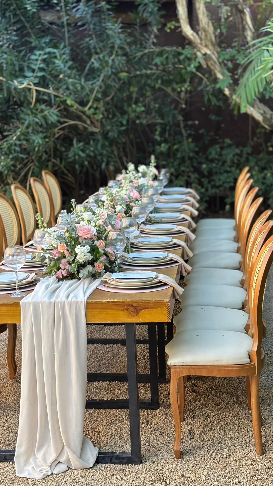
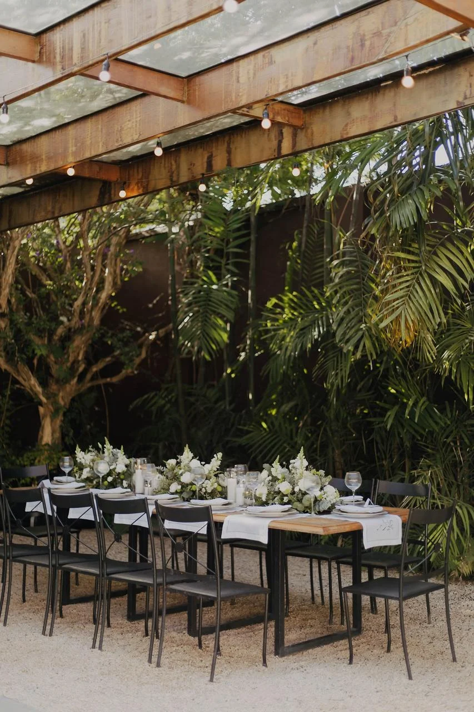
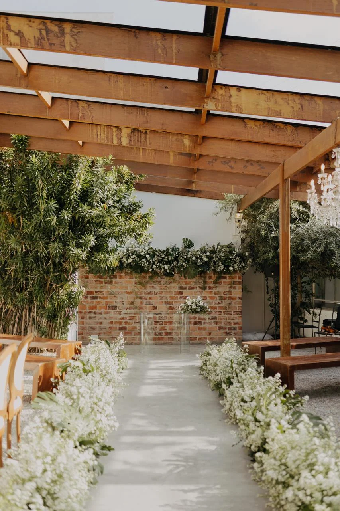
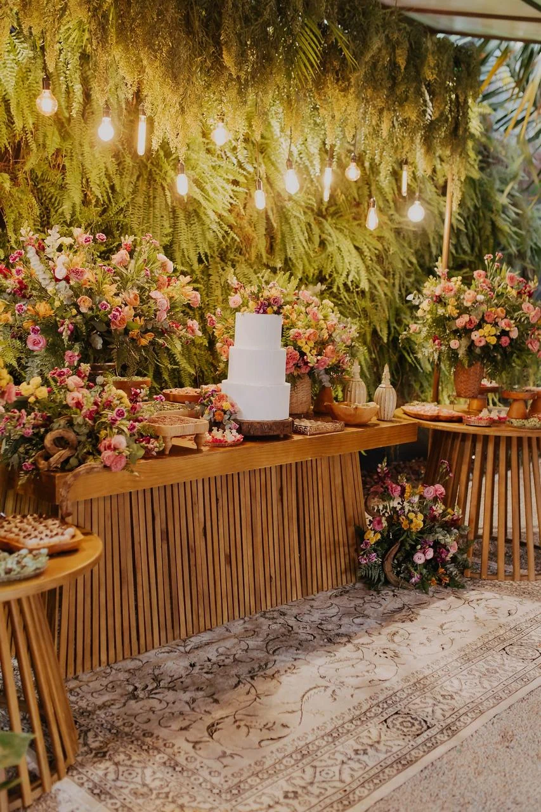

Um respiro.Só de vocês.
A cidade segue lá fora. Aqui, a luz atravessa o verde, as conversas ganham tempo e quem você ama encontra lugar para ficar.
CASAMENTOS & CELEBRAÇÕES · BELO HORIZONTE
Entre jardins, sabores e pessoas queridas, a sua história encontra um lugar para ser celebrada.


Há dias que merecem ser vividos por inteiro. O abraço que demora, a mesa cercada de pessoas queridas, a alegria de estar junto.
No Pátio La Tertúlia, jardins, gastronomia e decoração acolhem a sua história. Um refúgio em Belo Horizonte para celebrar com beleza, intimidade e o seu jeito de receber.
Conheça a experiênciaconvidados.
O verde ao redor, o cuidado à mesa, a beleza dos detalhes. Tudo se encontra para que vocês vivam o que realmente importa: estar juntos.
Um sim, um brinde, um abraço demorado. Instantes de celebrações reais que continuam a viver na memória de quem esteve aqui.
O primeiro sim. A história que se renova. Mais um ano para guardar. Há muitas razões para reunir quem se ama — e um jeito só seu de celebrar.
Há histórias que merecem um cenário à altura. Conte o que você imagina para o seu dia.